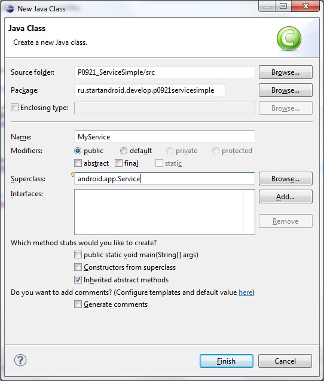
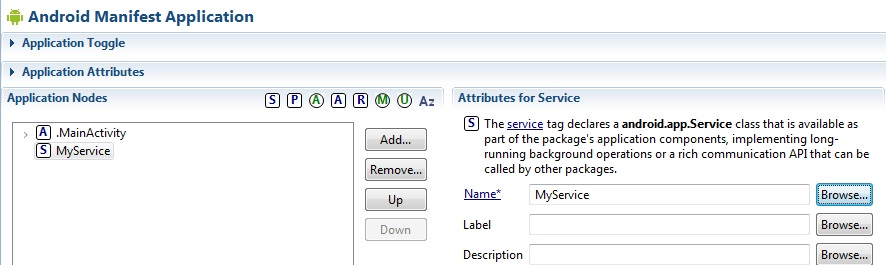
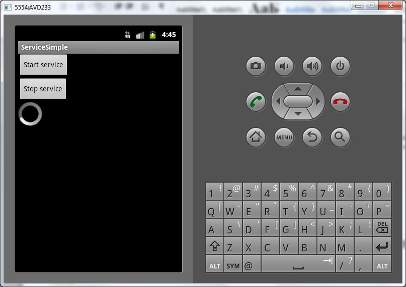
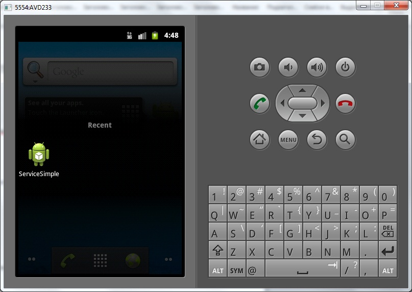

В этом уроке:
- создаем, запускаем и останавливаем простой сервис
Для начала надо определиться, как по-русски называть Service. Общепринятый перевод – служба. Наиболее популярный пример – службы в Windows. Но для системы Android мне привычнее использовать слово сервис. Его я и буду использовать в своих уроках для обозначения Service.
И еще один момент надо сразу прояснить. Service прописывается в манифесте рядом с Activity, и получается, что приложение (Application) содержит в себе и Activity и сервис. Предлагаю для упрощения изложения материала под словом приложение понимать все таки только Activity, которые можно запустить и увидеть на экране. Т.е. то, что мы раньше и называли приложением. А сервис считать отдельной от приложения вещью. А если надо будет обозначить приложение, как контейнер для Activity и сервиса, буду использовать слово Application.
Т.е. приложение – это набор Activity, сервис – Service. Приложение + сервис = Application. Как то так.
Итак, сервис – это некая задача, которая работает в фоне и не использует UI. Запускать и останавливать сервис можно из приложений и других сервисов. Также можно подключиться к уже работающему сервису и взаимодействовать с ним.
В качестве примера можно рассмотреть алгоритм почтовой программы. Она состоит из приложения и сервиса. Сервис работает в фоне и периодически проверяет наличие новой почты, скачивает ее и выводит уведомления. А когда вы запускаете приложение, оно отображает вам эти загруженные сервисом письма. Также приложение может подключиться к сервису и поменять в нем, например, период проверки почты или совсем закрыть сервис, если постоянная проверка почты больше не нужна.
Т.е. сервис нужен, чтобы ваша задача продолжала работать, даже когда приложение закрыто. В ближайших уроках мы разберемся, какие способы взаимодействия существуют между приложением и сервисом. В этом же уроке создадим простейший сервис, который будет выводить что-нибудь в лог. А приложение будет запускать и останавливать сервис.
Создадим проект:
Project name: P0921_ServiceSimple
Build Target: Android 4.0
Application name: ServiceSimple
Package name: ru.startandroid.develop.p0921servicesimple
Create Activity: MainActivity
Добавим в strings.xml строки:
<string name="start">Start service</string>
<string name="stop">Stop service</string> Экран main.xml:
<?xml version="1.0" encoding="utf-8"?>
<LinearLayout
xmlns:android="http://schemas.android.com/apk/res/android"
android:layout_width="fill_parent"
android:layout_height="fill_parent"
android:orientation="vertical">
<Button
android:id="@+id/btnStart"
android:layout_width="wrap_content"
android:layout_height="wrap_content"
android:onClick="onClickStart"
android:text="@string/start">
</Button>
<Button
android:id="@+id/btnStop"
android:layout_width="wrap_content"
android:layout_height="wrap_content"
android:onClick="onClickStop"
android:text="@string/stop">
</Button>
<ProgressBar
android:layout_width="wrap_content"
android:layout_height="wrap_content"
android:indeterminate="true">
</ProgressBar>
</LinearLayout>Две кнопки – для запуска и остановки сервиса. И ProgressBar.
Рядом с MainActivity создайте класс MyService, наследующий android.app.Service

Содержимое MyService.java:
package ru.startandroid.develop.p0921servicesimple;
import android.app.Service;
import android.content.Intent;
import android.os.IBinder;
import android.util.Log;
public class MyService extends Service {
final String LOG_TAG = "myLogs";
public void onCreate() {
super.onCreate();
Log.d(LOG_TAG, "onCreate");
}
public int onStartCommand(Intent intent, int flags, int startId) {
Log.d(LOG_TAG, "onStartCommand");
someTask();
return super.onStartCommand(intent, flags, startId);
}
public void onDestroy() {
super.onDestroy();
Log.d(LOG_TAG, "onDestroy");
}
public IBinder onBind(Intent intent) {
Log.d(LOG_TAG, "onBind");
return null;
}
void someTask() {
}
}У сервиса так же, как и у Activity есть методы onCreate и onDestroy – которые срабатывают при создании и уничтожении сервиса.
Метод onStartCommand – срабатывает, когда сервис запущен методом startService. В нем мы запускаем наш метод someTask, который пока пуст. У onStartCommand на вход и на выход идут параметры, мы их пока не используем.
Метод onBind нам пока не интересен. Но реализовать его мы обязаны, возвращаем null.
someTask – здесь будем писать работу для сервиса
Сервис, как и новые, создаваемые Activity необходимо прописать в манифесте. Делается это полностью аналогично. Жмете Add, выбираете Service. И в поле Name выбираете MyService.

MainActivity.java:
package ru.startandroid.develop.p0921servicesimple;
import android.app.Activity;
import android.content.Intent;
import android.os.Bundle;
import android.view.View;
public class MainActivity extends Activity {
final String LOG_TAG = "myLogs";
public void onCreate(Bundle savedInstanceState) {
super.onCreate(savedInstanceState);
setContentView(R.layout.main);
}
public void onClickStart(View v) {
startService(new Intent(this, MyService.class));
}
public void onClickStop(View v) {
stopService(new Intent(this, MyService.class));
}
}Здесь у нас два метода, которые срабатывают при нажатии на кнопки Start service и Stop service. В них мы соответственно запускаем или останавливаем сервис методами startService и stopService. На вход передаем Intent, указывающий на сервис. Это очень похоже на то, как мы вызываем Activity методом startActivity.
Давайте все сохраним и запустим приложение.

Нажмем Start service и смотрим лог:
onCreate
onStartCommand
Выполнился метод onCreate – сервис создался, и onStartCommand – сервис выполняет содержимое метода onStartCommand.
Если мы теперь еще раз нажмем Start service:
onStartCommand
Сервис уже создан, onCreate не вызывается, выполняется только метод onStartCommand.
Жмем Stop service
onDestroy
Сервис уничтожился.
Убедимся, что сервис не зависит от приложения. Жмем Start service.
onCreate
onStartCommand
Сервис запущен. Закрываем приложение кнопкой Назад. В логах тишина, onDestroy в сервисе не выполнился, сервис продолжает жить. Ему все равно, работает приложение, его запустившее или не работает.
Долгим удержанием клавиши Домой выведем список последних приложений

снова откроем наше приложение и нажмем Stop service. В логах:
onDestroy
Сервис уничтожен.
Теперь попробуем выполнять что-нибудь осмысленное в onStartCommand. Перепишем метод someTask в MyService.java:
void someTask() {
for (int i = 1; i<=5; i++) {
Log.d(LOG_TAG, "i = " + i);
try {
TimeUnit.SECONDS.sleep(1);
} catch (InterruptedException e) {
e.printStackTrace();
}
}
}Будем с интервалом в 1 секунду выводить в лог записи из сервиса.
Все сохраним, запустим и нажмем Start service:
ProgressBar замер, экран стал недоступен. А логи идут:
onCreate
onStartCommand
i = 1
i = 2
i = 3
i = 4
i = 5
Вывод – сервис работает в основном потоке и блокирует экран.
Вынесем цикл с паузами в отдельный поток. И чтобы два раза не бегать, давайте заодно узнаем, что делает метод stopSelf.
Перепишем метод someTask:
void someTask() {
new Thread(new Runnable() {
public void run() {
for (int i = 1; i<=5; i++) {
Log.d(LOG_TAG, "i = " + i);
try {
TimeUnit.SECONDS.sleep(1);
} catch (InterruptedException e) {
e.printStackTrace();
}
}
stopSelf();
}
}).start();
}Мы вынесли код в отдельный поток и добавили вызов метода stopSelf – этот метод аналогичен методу stopService, он останавливает сервис, в котором был вызван.
Все сохраняем, запускаем и жмем Start service. ProgressBar крутится, экран не блокирован, логи идут:
onCreate
onStartCommand
i = 1
i = 2
i = 3
i = 4
i = 5
onDestroy
Сервис создался, выполнил работу и сам остановился методом stopSelf.